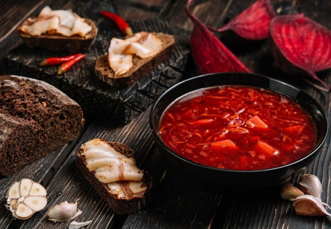

Натхнення
Як смакує Україна: гастрономічні традиції та найвідоміші страви
18.09.2022
У 2016 році туристичний блог Yonderbound зробив рейтинг найсмачніших кухонь світу. Українська гордо увійшла у першу десятку, а в Європі була визнана третьою. З того часу популярність наших гастрономічних традицій ні краплі не зменшилась. Більше того, кухарі і ресторатори відроджують забуті автентичні страви і дивують ними не тільки гостей країни, а й самих українців.
Чим же особлива українська кухня та які національні страви варто спробувати, щоб назавжди запам’ятати, як смакує Україна.
Як формувалася українська кухня
Вважається, що основу українських кулінарних традицій було покладено ще понад 7 тисяч років тому трипільцями! Саме тоді наші пращури навчилися робити хліб, який на тисячоліття став «усьому головою». Спочатку він був прісним, потім навчилися робити закваску, перші вироби були з житнього борошна, але в різних регіонах України до нього додавали різні інгрідієнти, що сприяло неймовірному різноманіттю. Свідченням цьому є навіть листи Бальзака, в яких він писав: «…Як ви приїдете на Україну, в цей рай земний, де я запримітив уже 77 способів приготування хліба».
Феномен української кухні в тому, що вона одночасно і цілісна, і має регіональне різноманіття. Через те, що наші землі довгий час були частинами різних держав і перебували під впливом різних народностей, культурні особливості регіонів формувалися окремо один від одного.
Значну роль відігравали також географічні фактори. Наприклад, на Західній Україні більш поширеними були продукти вівчарства, а на Поліссі – страви з картоплі. Але незважаючи на це, по всій території ми маємо досить однорідний набір харчової сировини ( свинина, сало, буряк, пшеничне борошно, бобові, рослинна олія) і спосіб її обробки. Традиційні українські страви переважно варені, тушковані і печені. Адже саме ці маніпуляції з їжею проводили в печі. А найпоширенішими способами зберігання продуктів було соління та квашення. Чого тільки варті ніжинські огірочки, які вагонами експортувалися в 56 країн світу, у тому числі і на стіл британської королеви!
ТОП українських страв
Перші страви
Борщ
Ця страва – символ української кухні, перша і єдина, яка уже на розгляді в ЮНЕСКО, щоб бути включеною в список Нематеріальної культурної спадщини України. Саме його, згідно опитуванням, більшість українців вважають улюбленою стравою національної кухні. До речі, так думають не тільки українці: CNN включили борщ до 20 найсмачніших супів у світі! Хоча вважається, що найбільш поширеним борщ є в Північних та Центральних регіонах, насправді готують його скрізь. Класичний борщ складається з близько 30 інгредієнтів! Серед них найголовніші: буряк, капуста, картопля, морква, цибуля, яловичина та томатна паста. Але в залежності від регіону рецепти можуть різнитися. Наприклад, на Поділлі додають квасолю, на Півдні – борошно, на Слобожанщині – пиво, у київський борщ – хлібний квас. Є зелений борщ, червоний, грибний, холодний. Усього понад 70 видів! Їли борщ зазвичай не з хлібом, а з пампушками з часником.
Фестивалі борщу регулярно проводять у кожному регіоні України.
Бограч
Цю страву ми запозичили в угорців, і зараз вона стала традиційною в родинах Західної України. Основними інгредієнтами для бограча слугують м’ясо різних видів (3-5), сало, картопля, морква, цибуля, капуста кольрабі, спеції і обов’язково паприка. Традиційно бограч готувався на відкритому вогні у казані і мав бути дуже наваристим, схожим на гуляш. До речі, навіть сама назва бограч означає «казан». На відміну від борщу, бограч вважався святковою стравою або варіантом для пікніка. Бо ж його навіть придумали пастухи, що готували цю страву в горах.
Капусняк
Це традиційна перша страва, яку готують в Центральних регіонах України. Її особливістю є кислуватий смак, що отримується завдяки основному інгридієнту – квашеній капусті. У залежності від регіону і сезону рецепти капусняка варіюються. Він може бути пісний, вегетаріанський, рибний, грибний тощо. Класичний капусняк готується з капусти, моркви, цибулі, картоплі, пікниці (ковбаса з яловичини та свинини), грибів та спецій.
Окрошка
Достеменно невідомо, де і коли виникла ця страва, але історики вважають, що коріння окрошки сягають аж часів Середньовіччя, коли після хрещення Русі, князь Володимир наказав роздати людям «їжу, мед і квас». Так квас поширився серед населення, а згодом став основою для холодного супу, в який додавали хліб і зелень. Зараз окрошка – традиційна страва Східної України, але єдиного рецепту немає. Основними інгредієнтами мають бути огірки, зелена цибуля, редька, квас, а решту господині додають за власним смаком.
Другі страви
Вареники
Вареники або на західноукраїнський лад пироги – страва, яку Білл Клінтон заніс до свого списку Must Be Served, якій єврейський поет Саул Черніхівський присвятив одноіменну поему та музичну ідилію, про які згадував у «Енеїді» Котляревський та у «Вії» Гоголь. За однією з версій вареники, що раніше звалися «вараніки», були відомі ще в дохристиянські часи, а за іншою страва походить від турецьких «дюш-варів». Готують вареники з прісного тіста, а начинка може бути найрізноманітнішою. Традиційними вважалася картопля, цибуля, шкварки, сир, вишні, чорниці. На Чернігівщині додають шкварки, на Закарпатті – бринзу,на Поліссі – товчену квасолю. Відомі навіть варіанти начиняти страву папороттю, редькою або борошном зі смальцем. З варениками пов’язані багато народних звичаїв ітрадицій: їх ототожнювали з Місяцем і використовували як жертовну їжу; процес замішування тіста символізував зародження світу, а начинка –продовження роду; їх приносили породілі, їли під час жнив та коли народжувала корова, щоб теля було здоровим. На варениках дівчата гадали на Андрія, а на Старий Новий рік готували страву з сюрпризом, ховаючиу начинку щось неочікуване (гудзик, квасолину, перецьтощо).
Куліш
Куліш був улюбленою стравою українських козаків та чумаків. Його часто готували на обід в походах (звідси і нша назва «польова каша») або вдома на вечерю. Куліш готується на основі пшона з додаванням картоплі, моркви, сала, цибулі та зелені. Але знову ж таки залежно від регіону рецепти страви різнилися: На Чернігівщині та Полтавщині готували гречаний, а на Південному Поділлі – кукурудзяний, на Правобережному Поліссі куліш могли варити на молоці, сироватці або маслянці. Справжній куліш мав бути густим, а не таким, у якому крупина за крупиною ганяється з дубиною.
Банош
Банош – одна з найпопулярніших страв галицької кухні, яку на Закарпатті готують по кілька разів на тиждень. Справжній банош має бути приготований у чавунному казані на відкритому вогнищі з кукурудзяної крупи на овечій сметані або вершках, які 3 дні зберігаються в коморі. Заправляють готовий банош бринзою, білими грибами або шкварками. Помішувати кашу можна тільки дерев’яною ложкою і тільки в одну сторону.
Голубці
Свою варіацію голубців має ціла низка країн, досі ведуться дослідження з приводу етимології та походження цієї страви. В Україні голубці давно вже вважаються традиційною стравою, але їх приготування і статусність відрізняється залежно від регіонів. Так, наприклад, на більшості території країни голубці вважалися буденною стравою, а от в деяких районах Правобережжя їх готували тільки до святкового столу.Свою варіацію голубців має ціла низка країн, досі ведуться дослідження з приводу етимології та походження цієї страви. В Україні голубці давно вже вважаються традиційною стравою, але їх приготування і статусність відрізняється залежно від регіонів. Так, наприклад, на більшості території країни голубці вважалися буденною стравою, а от в деяких районах Правобережжя їх готували тільки до святкового столу. Голубці являють собою капустяне листя (запарене або квашене) з різними начинками. Спочатку в якості начинки використовували фарш з крупи (кукурудзяної, пшона, рису або гречки залежно від регіону); смаженої цибулі і шкварок. М’ясо додавали лише на свята. Тушкували голубці у печі з м’ясним бульйоном, сметаною або квасом.
Деруни
Деруни – це традиційні українські картопляні оладки, особливо популярні в Східних та Північних областях. У залежності від регіону вони ще можуть називатися кремзликами, тертюхами, рисилованиками, терчаниками тощо. Головним інгредієнтом є «дерта» картопля, до якої додають цибулю, трошки борошна, яйце та сіль. Усе це перемішується і смажиться на соняшниковій олії.
Котлета по-київськи
За право називатися батьківщиною цієї страви досі сперечаються Україна, Росія, Німеччина, Франція та США. Тим не менше, сьогодні котлета по-київськи є гастрономічним символом саме української столиці. Вважається, що вперше вона з’явилася на столах киян ще на початку 20 століття, але на певний період була забута і відродилася уже в середині століття в місцевих ресторанах. Масовою страва стала уже в 60-х. Котлета по-київськи готується з ніжного курячого філе з рідкою начинкою з масла, зелені та спецій і обсмажується у панірувальних сухарях у фритюрі.
Полтавські галушки
Галушку іноді називають королевою української кухні. Цю страву з вареного тіста у вигляді окремого блюда або інгредієнту для супу готовули по всій території України, але найбільш популярною вона стала саме на Полтавщині. Тут їй навіть встановили пам’ятник і проводять фестиваль на її честь. Для приготування галушок тісто з борошна, солі та води рвалося або різалося. З нього формувалися кульки або квадратики, які відварювалися найчастіше на пару і потім додавалися в суп або подавалися окремо з шкварками, сметаною або смаженою цибулею у піст. Полтавські галушки подаються з вершковим маслом, часником, сметаною та відвареною куркою.
Биточки з тюльки
Биточки з тюльки стали коронною стравою одеської кухні з часів Другої світової війни. Для їх приготування беруть свіжу тюльку, обвалюють її в яєчно-майонезній суміші і обсмажують в олії. Подаються биточки з соусом з майонезу, в який додають каперси, огірки, цибулю і кріп.
Сало
Сало – один з найголовніших продуктів української кухні. Його вживають сирим, соленим, копченим, смаженим і навіть в шоколаді, з хлібом, часником, цибулею, зеленню.
Салу присвячують вірші і пісні:
«Сало їм. На салі сплю,
Бо я так його люблю…
Український талісман,
Віковічний наш талан.
Сало – символ сили і достатку.
Буде сало, буде все в порядку».
М. Поплавський
Салу приписується безліч корисних властивостей, зокрема здатність запобігати атеросклерозу, виводити токсини, полегшувати похмілля тощо. У 2011 році у Львові відкрили єдиний у світі музей сала. Саме тут можна скуштувати сало в шоколаді та ще 35 видів цього продукту.